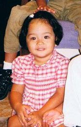
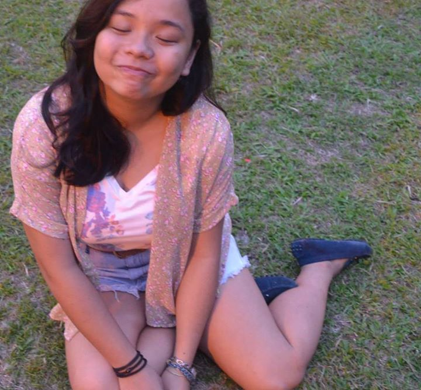
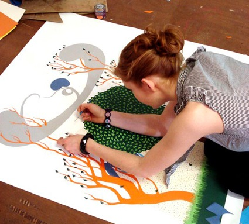
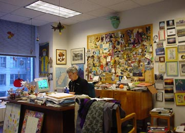
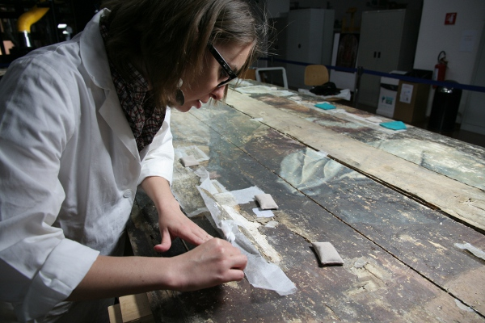

and so it began

Born in the Philippines and raised in Thailand, my childhood was an odd one. Isolated from my peers, school was my only outlet for social interaction. Break time would be my favorite time because of all the games we would play. Make-believe and play-pretend were my favorite games to play. My classmates and I had Cops & Robbers, Princess & the Thieves, Shark & Lifeguard, and so on and so forth. I can recall the teachers writing on my report card, "Nikki is a bright and promising student but is turning into a bit of a chatterbox." Little did they know that outside of school, I had no friends or peers to talk to.
When I wasn't in school--which I was for quite a few times because of financial struggle--my only other outlet was to put play-pretend on paper. Armed with my mom's Prang watercolor set and my father's limitless supply of scratch paper, I would make up stories. A cloud city, an elfin land, a rainy utopia, inhabited by characters like animated pastries, digital cubes and a crab conducting his own orchestra.
ground zero: awkward
Eventually, I moved schools. Maybe a change of scenery and social climate was all I needed because I noticeably became happier and comfortable in my high school. I discovered many of my present passions, like theater and performance; and rediscovered a few past loves, like illustration and storytelling. I found happiness, I believed. A nuturing spiritual community was all I needed.
to all that lies beyond

I am nowhere near finished and I hope it stays that way. The more work I can still do.
dreams
I grew up with many dreams because growing up, I thought I would be given the chance to do it all. Be a fashion designer, be a marine photographer, a journalist, an artist. Only when I learned about college did I realize that I would have to focus on a specific career.
  
Left to Right: Artist/Illustrator; Author/Editor; Art Restorer
For as long as I could remember, I've spent my days telling stories visually and literally, combining both artforms. Illustration is a passion of mine I plan on pursuing past my college days. One of my dreams is to become a children's book writer and illustrator, as the stories I was told as a child holds great meaning to who I am today. By creating content, I hope to inspire children to tell their own stories as a means to reach out to other people and to learn more about themselves.
My foremost, greatest dream is to work in a museum, restoring the great masterpieces to glory. It's a quiet and tedious job, requiring years of specialization and training in the fields of not only the soft sciences and fine arts, but hard sciences like organic chemistry and such. I plan on trying. I plan on saving up for an education at New York University and pursuing this career.